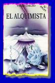
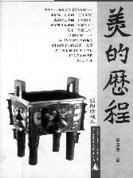

最近实在有些懒散，每天缺觉似的，天天午饭之后在办公室里蒙头大睡，上班时间不得不醒来了也是痛苦不堪。连续三、四天晚上都做恶梦，晚上睡觉的时间比上班的时候还要紧张和疲惫。今天和昨天、前天一模一样，这就是我目前的生活状态。说到做梦，让我想到在我生日时收到GRACE寄来的生日礼物：两本书。

其中一本为保罗·科埃略1988年出版的《牧羊少年奇幻之旅》（O ALQUIMISTA），他的《牧羊少年奇幻之旅》与《小王子》一样，被誉为“能够改变一个人一生的书籍”。这是部追求梦想、完善人生的寓言故事，启示人们实现梦想要经历一个艰难的过程，需要勇气、智慧、执著和经受考验。牧羊少年因为做了两个梦而开始他寻梦的旅程。2002年年初，我在一周内也做了两个梦，之所以记得清楚缘于梦里的人物和情节大致相同，虽然我没有象牧羊少年那样去寻梦，可最终梦里的故事变成了现实！上周六和周日的晚上，我又做梦了，为什么说“又”做梦了呢？如果说2002年年初的梦是美梦，那么周六和周日晚上的梦便是恶梦，“又”字体现在相同的人物上，但梦的内容却有着天壤之别。
听说GRACE向很多人推荐过《牧羊少年奇幻之旅》，并且送了一本给她的YANG。GRACE在书上写到：这本书让我想起自己的梦，让我追问我自己“我是谁？我的生命中最重要的事是什么？“我已经用自己的生命旅程来验证其中的话。这让我感到充实、快乐。希望它也能带给我的好友同样的启示。

另一本是李泽厚的《美的历程》。 查阅了一下《美的历程》是作为素质教育的书籍，目的在增加文化底蕴。那是一本精致的插图版的书，2001年第一次印刷的，当我向另一个朋友谈及时，他说当他大一时《美的历程》还没有插图版呢。
八十年代上大学的文科生恐怕没有不知道李泽厚的。自1979年，是李先生的一系列著作给当时近乎废墟的思想界和文化界提供了营养。五十年代以来的读书人中能够出现李泽厚，真是一个奇迹。现在仍然有不少学界人士对李先生心存感激！豪华插图本《美的历程》，使仅仅只有十五六万字的小书售价高达88元（这个数字按照我们时代的语境暗示了“发发”），不能不说是出版商对形式化了的李氏思想的巧妙借用。在新版《美的历程》中，精美的图片、豪华的纸型、精湛的排版制作工艺，为形式化了的李氏思想，找到了恰当的物质化样式。
有趣的是，《美的历程》里有一个结论正可以用在这里：任何一种审美对象，都会积淀为某种形式，而最后无一例外都会积淀为抽象性、象征性的图案，从而沦为装饰品。豪华本《美的历程》好像有点违背李先生的初衷：至少对一小部分曾经受其影响，至今还心存感激者来说，“发发”显然太贵了，更不用说现在还处在长知识长身体阶段的年轻一代。
不得不说GRACE写给我的生日寄语给我内心注入一股暖流，但是也不免惭愧万分，从前订下的人生目标现在是否还有至少“2个”让我在继续努力、为之奋斗？我对生命的感动和感激也越来越少，我不了解别人的生活状态和目标是怎样的，而我的确是一日比一日麻木，自己给自己的压力也不象从前那么多。当朋友打来电话问我“最近怎么样啊？”我常常毫不羞愧地回答到：“混日子呢...”
No Responses to “寂寞咖啡之”梦”篇”
Leave A Reply
存档只读，评论已关闭。